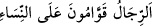
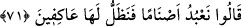
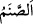
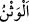
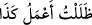
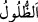
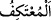

__WORD__ “Erkekler kadınlar üzerine kâimdirler (onların yöneticisi ve
koruyucusudur).” (en-Nisa, 4/34) kavli buna dikkat çeker. Kur’ân’ın genelinde ise bu
kelime ile hem erkek hem de kadınlardan oluşan topluluk kastedilmiştir. Nitekim el-
Müfredât’ta böyle geçmektedir.
İbrâhim (a.s.)’ın kavminin putlara taptığını bile bile onlara böyle sorması, onların
dalalet ve sapıklıklarına dikkat çekmek ve taptıkları şeylerin ibadete müstahak
olmadığını kendilerine göstermek içindi.
71. “Putlara tapıyoruz ve onlara tapmaya devam edeceğiz” diye cevap verdiler.
“Putlara tapıyoruz” Bu putlar Keşfü’l-esrâr’da belirtildiği üzere altın, gümüş,
demir, bakır, odundan yapılmış yetmiş iki puttur. Fethur’r-Rahmân’da belirtildiği gibi
Âdemoğlu sûretinde taş ve diğer şeylerden yapılan putlara “__WORD__ denir.
el-Müfredât’ta der ki: “__WORD__ gümüş veya bakırdan yapılan heykele denir. “__WORD__ ise
kendisine tapınılan taştır.
Kâşifî der ki: “Kasdedilen, çeşitli madenlerden farklı şekillerde yaptıkları
heykellerdir; onlara ibadet etmeye devam ederler.”
“Ve onlara tapmaya devam edeceğiz” diye cevap verdiler.”
Onlar “putlara” kavli ile yetinmediler, ‘tapıyoruz’ fiilini açıkça zikrederek ve onlara
tapmaya devam edeceklerini sevinerek ve övünerek söyleyerek cevabı uzattılar.
Gece değil de gündüz bir iş yaptığında “__WORD__ Gün boyunca şu ameli işledim.”
denir. Âyetin zâhirinden anlaşılan, onların putlara ibâdetinin gündüze mahsus
olmamasıdır. O halde burada “__WORD__ ile kasdedilen devam etmektir. Yâni daima onlara
yakın oluruz, onlardan ayrılmayız ve onlara ibadete devam ederiz.
“__WORD__ bir şeye bağlanmak, ayrılmamak demektir. Allah’a yakınlık kasdıyla
mescidden ayrılmayan kimseye “__WORD__ denilmesi de bundandır.
Ebü’l-leys der ki: “İbrahîm (a.s.)’ı annesi mağarada doğurmuştu. Mağaradan çıkıp
büyüyünce Mısır’a gitti. Onların hangi yolda ve mezhepte olduklarını öğrenmek istedi.
İşte bir beldeye vardığı zaman akıllı kimseye oradakilerin mezheb ve meşreblerini
sormak gerekir. Onları istikâmet üzere bulursa onlarla beraber olur. İstikâmet üzere
bulmazsa, onların inanışlarını reddeder. İbrahîm (a.s.): “Neye tapıyorsunuz?” deyince,
onlar “Putlara tapıyoruz ve onlara tapmaya devam edeceğiz.” diye cevap verdiler.
Bunun üzerine İbrâhim (a.s.) onların fiillerinin kusur ve aybını açıklamak istedi: